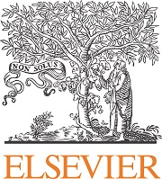
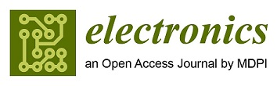

28th UK Conference on
Medical Image Understanding and Analysis - MIUA
Scope
MIUA is a UK-based international conference for the communication of image processing and analysis research and its application to medical imaging and biomedicine. This is a rapidly growing subject with ever increasing real-world applicability.
MIUA welcomes all researchers in medical imaging including mathematicians, computer scientists, bioinformaticians, clinicians, engineers and bioscientists.
MIUA is the principal UK forum for communicating research progress within the community interested in image analysis applied to medicine and related biological science. The meeting is designed for the dissemination and discussion of research in medical image understanding and analysis, and aims to encourage the growth and raise the profile of this multi-disciplinary field by bringing together the various communities. MIUA covers many topics in medical imaging including:
| Biomarker Discovery | Brain Imaging | Cancer | Cardiac Imaging |
| Circulation and Microcirculation | Computational anatomy and physiology | Computed Tomography | Deep Learning |
| Dermatology | Image Interpretation | Image Guided Intervention | Image Physics |
| In-Vivo Intravital Imaging | Inflammation | Machine Learning | Magnetic Resonance Imaging |
| Microscopy | Multi Modal Image Analysis | Neurology | Novel Imaging Methods |
| Perception Modelling and Simulation | Positron Emission Imaging | Ophthalmology | Optical Imaging |
| Radiology | Texture Analysis | Tissue Perfusion | Ultrasound |
Prices
Final date for participant registration: 14th July 2024
| Student | £295 |
| Non-Student | £450 |
| Single Day ticket | £150 |
| Extra Conference Dinner Ticket | £65 |
Accommodation
If you are attending the MIUA Conference and need accommodation, Manchester Met is offering a brilliant package in Archway Halls:
- 3 night stay for £150 (23rd July check in).
- 2 night stay for £100. (24th July check in).
- Single Ensuite rooms with communal living / kitchen space.
- Linen / Towels / Toiletries included.
- No food included.
Student Hardship Fund
Opportunity Alert: Student Hardship Fund Applications Open for MIUA2024, sponsored by Journal of Imaging and Electronics!
Calling all passionate students! We're excited to announce that applications are now open for the Student Hardship Fund for the upcoming MIUA2024 Conference, generously sponsored by Journal of Imaging and Electronics! At MIUA, we believe in nurturing talent and supporting students on their academic journey. We understand that financial constraints can sometimes stand in the way of attending conferences and accessing valuable learning opportunities. Thanks to the support of Journal of Imaging and Electronics, we're able to help two students facing financial hardship. Deadline for application is 15th June.
As a recipient of the Student Hardship Fund, you'll receive £250 for the student registration fee. Whether you're an undergraduate or graduate student, we invite you to seize this opportunity to expand your knowledge, connect with peers, and showcase your research at MIUA. Interested student please fill in the application form and send to W.Lu@mmu.ac.uk.
Let's break down barriers together and ensure that every student has the opportunity to thrive at MIUA 2024!
Application Form: download here.
Travel Information
Travelling to our campus couldn't be easier. The region is well served by motorways, and has good public transport. Manchester International Airport is just 10 miles (16km) south of the city centre, with fast and frequent rail travel to Manchester.
Our campus is close to Manchester's city centre. The routes most used by students are well served by public transport. There's a free shuttle bus that covers the city centre, linking the main railway stations, NCP car parks, and bus and Metrolink tram stops.
The campus is made up of two areas, Birley and All Saints. MIUA is hosted in the MMU Business School, which is part of the All Saints campus. Below is a campus map with red circles around the Business School location and arrows directing to the main entrance. The original campus map without annotations can be downloaded here.
Full travel information for MMU can be found here.
Conference Building Address:
Manchester Metropolitan University
Business School
Oxford Road
Manchester
M15 6BH
Car Parking:
If anyone requires parking, there are NCP car parks around campus:
Chester Steet - M1 5GE
Circle Square - M1 7ED
Boundary Lane - M15 6FD
(please be aware that Boundary Lane only has a 10 space capacity).
Other car parks:
Manchester Aquatics Centre - M13 9SS
Taxis:
Anyone needing to order a taxi, it is recommended to be picked up on Lower Chatham Street
(Salutation Pub as reference), as Lower Ormond Street is now pedestrianised.
The Business School reception can help delegates if you need assistance.
MIUA 2024 Programme
DAY 1 - July 24th
| 8:30 - 9:00am | Arrival (tea, coffee, and Danish pastry) |
| 9:00 - 9:30am | Welcome Speech (G.27) |
| 9:30 - 10:30am | Keynote Speaker: Prof. Alejandro Frangi (G.27) |
| Title: On Trials and Tribulations - Safer, Faster, and More Sustainable Medical Devices for Better and More Equitable Care | |
| Session Chair: Adrian Davison | |
| 10:30 - 11:00am | Tea break and networking (Exhibition Atrium) |
| 11:00 - 12:30pm | Oral Session 1: Advancement in Brain Imaging (G.27) |
| Session Chairs: Xujiong Ye and Ewa Niewiadomska-Szynkiewicz | |
| Paper ID 27: Robust Multi-Modal Registration of Cerebral Vasculature | |
| Bertram Sabrowsky-Hirsch (RISC Software GmbH)*; Ahmed Alshenoudy (RISC Software GmbH); Josef Scharinger (JKU); Matthias Gmeiner (Kepler University Hospital); Stefan Thumfart (RISC Software GmbH); Michael Giretzlehner (RISC Software GmbH) | |
| Paper ID 43: Towards Segmenting Cerebral Arteries from Structural MRI | |
| Ahmed Alshenoudy (RISC Software GmbH)*; Bertram Sabrowsky-Hirsch (RISC Software GmbH); Josef Scharinger (JKU); Stefan Thumfart (RISC Software GmbH); Michael Giretzlehner (RISC Software GmbH) | |
| Paper ID 52: Stochastic Uncertainty Quantification techniques fail to account for Inter-Analyst Variability in White Matter Hyperintensity segmentation | |
| Ben R Philps (University Of Edinburgh, School of Informatics, Biomedical AI CDT)*; María del C. Valdés Hernández (University of Edinburgh); Susana Munoz Maniega (University of Edinburgh); Mark Bastin (University of Edinburgh); Eleni Sakka (University of Edinburgh); Una Clancy (University of Edinburgh); Joanna Wardlaw (University of Edinburgh); Miguel Bernabeu (University of Edinburgh) | |
| Paper ID 54: Learning-based MRI Response Predictions from OCT Microvascular Models to Replace Simulation-based Frameworks | |
| Jaloliddin Rustamov (United Arab Emirates University); Zahiriddin Rustamov (United Arab Emirates University); Nadia Badawi (UAEU); Frederic Lesage (Polytechnique Montreal ); Nazar M Zaki (UAEU); Rafat Damseh (UAEU)* | |
| Paper ID 97: Multimodal 3D Brain Tumor Segmentation with Adversarial Training and Conditional Random Field | |
| Lan Jiang (University of Dundee); Yuchao Zheng (University of Dundee); Miao Yu (University of Dundee); Haiqing Zhang (University of Dundee); Fatemah Aladwani (University of Dundee); Alessandro Perelli (University of Dundee)* | |
| Paper ID 56: DeepDSMRI: Deep Domain Shift analyzer for MRI | |
| Rafsanjany Kushol (University of Alberta)*; Sanjay Kalra (University of Alberta); Herbert Yang (University of Alberta) | |
| 12:30 - 1:30pm | Lunch and Networking (Dining Atrium) |
| 1:30 - 3:00pm | Poster Session I: Brain Imaging, Medical Images and Computational Models (Exhibition Atrium) |
| (Full Paper ID: 81, 34, 91, 30, 42, 99, 38) | |
| (Abstract ID: 100, 109, 112, 117, 121, 133, 135, 138, 139, 58, 102, 104, 111, 114, 125) | |
| For the full list of posters, please refer to page 18 of the full programme. | |
| 3:00 - 3:30pm | Tea break and networking (Exhibition Atrium) |
| 3:30 - 5:00pm | Oral session 2: Medical Images and Computational Models (G.27) |
| Session Chairs: Jiling Feng and Baihua Li | |
| Paper ID 26: Micro-CT Imaging Techniques for Visualizing Pinniped Mystacial Pad Musculature | |
| Elizabeth Evans (University of Manchester); Alyx Elder (Manchester Metropolitan University)* | |
| Paper ID 35: SCorP: Statistics-Informed Dense Correspondence Prediction Directly from Unsegmented Medical Images | |
| Krithika Iyer (Scientific Computing and Imaging Institute, University of Utah)*; Jadie R Adams (Scientific Computing and Imaging Institute, University of Utah); Shireen Y. Elhabian (Scientific Computing and Imaging Institute, University of Utah) | |
| Paper ID 2: JointViT: Modeling Oxygen Saturation Levels with Joint Supervision on Long-Tailed OCTA | |
| Zeyu Zhang (The Australian National University)*; Xuyin Qi (The University of Adelaide); Mingxi Chen (Guangdong Technion Institute Of Technology); Guangxi Li (The University of Sydney); Ryan Pham (University of Adelaide); Ayub Qassim (Flinders University); Ella C Berry (Flinders University); Zhibin Liao (University of Adelaide); Owen Siggs (Garvan Institute of Medical Research); Robert A McLaughlin (University of Adelaide); Jamie Craig (Flinders University); Minh-Son To (Flinders University) | |
| Paper ID 98: Identification of skin diseases based on blind chromophore separation and artificial intelligence | |
| Mustapha Zokay (Laboratory of materials, signals and systems and physical modeling, Faculty of Sciences, Ibn Zohr University, Morocco)*; Hicham Saylani (Laboratory of Electronics, Signal Processing and Physical Modeling, Faculty of Sciences, Ibn Zohr University, Morocco) | |
| Paper ID 89: Generating Chest Radiology Report Findings using a Multimodal Method | |
| Chenyu Wang (University of Dundee); Vladimir Janjic (University of Dundee); Stephen J. McKenna (University of Dundee)* | |
| Paper ID 92: Image processing and machine learning techniques for Chagas disease detection and identification | |
| Lavdie Rada (Bahcesehir University)*; Inass Azzawi (Bahcesehir University); Preet Kumar (University of the West of England); Carlos Francisco Brito Loeza (University of Yukatan); Cefa Karabag (London Metropolitan University); Constantino Reyes-aldasoro (City, University of London) | |
| 6:00 - 7:00pm | Visit to the Institute of Sport (MRI) |
| Coordinators: Indranath Chatterjee and Aneurin Kennerley. Please sign up below | |
| 7:00pm | Conference Reception (Dining Atrium) |
DAY 2 - July 25th
| 8:30 - 9:00am | Arrival (tea, coffee, and Danish pastry) |
| 9:00 - 10:30am | Oral Session 3 (Parallel Sessions) |
| 3(a) Digital Pathology, Histology and Microscopic Imaging (G.27) | |
| Session Chairs: Adam Shepherd and Simon Graham | |
| Paper ID 17: RoTIR: Rotation-Equivariant Network and Transformers for Zebrafish Scale Image Registration | |
| Ruixiong Wang (University of Bristol)*; Alin Achim (University of Bristol); Renata Raele-Rolfe (University of Bristol); Qiao Tong (University of Bristol); Dylan Bergen (University of Bristol); Chrissy Hammond (University of Bristol); Stephen Cross (University of Bristol) | |
| Paper ID 62: GRU-Net: Gaussian attention aided dense skip connection based multiResU-Net for Breast Histopathology Image Segmentation | |
| Ayush Roy (Jadavapur University); Payel Pramanik (Jadavpur University); Soham Ghosal (IIITNR); Daria Valenkova (Saint Petersburg Electrotechnical University "LETI"); Dmitrii Kaplun (Saint Petersburg Electrotechnical University "LETI")*; Ram Sarkar (Jadavpur University) | |
| Paper ID 75: Bounding Box is all you need: Learning to Segment Cells in 2D Microscopic Images via Box Annotations | |
| Nabeel Khalid (DFKI)*; Maria Caroprese (Sartorius, Digital Solutions, Royston); Gillian Lovell (Sartorius, BioAnalytics, Royston); Daniel A Porto (Sartorius, BioAnalytics, Ann Arbor); Johan Trygg (Sartorius Corporate Research); Andreas Dengel (DFKI GmbH); Sheraz Ahmed (DFKI) | |
| Paper ID 136: Streamlining Colon Biopsy Screening with Interpretable Machine Learning | |
| Quoc Dang Vu (Histofy Ltd); Navid Alemi (Histofy Ltd); Johnathan Pocock (Histofy Ltd); David Snead (Histofy Ltd); Nasir Rajpoot (Histofy Ltd); Simon Graham (Histofy Ltd)* | |
| Power Pitch (tbc) - 3-4 minutes each | |
| 3(b) Dental and Bone Imaging (G.35) | |
| Session Chairs: Haider Raza and Sean Maudsley-Barton | |
| Paper ID 66: Enhancing Cephalometric Landmark Detection with a Two-Stage Cascaded CNN on Multi-Resolution Multi-Modal Data | |
| Reeha Khan (National University of Sciences and Technology)*; Muhammad Anwaar Khalid (Air University); Kanwal Zulfiqar (Riphah International University); Ulfat Bashir (Riphah International University); Muhammad Moazam Fraz (National University of Sciences and Technology) | |
| Paper ID 48: Enhancing Dental Diagnostics: Advanced Image Segmentation Models for Teeth Identification and Enumeration | |
| Mohsin Ali (School of Computer Science and Electronics Engineering, University of Essex)*; Moin Hassan (School of Computer Science and Electronic Engineering, University of Essex); Esra Kosan (Department of Periodontology, Oral Medicine and Oral Surgery, Berlin); John Q. Gan (School of Computer Science and Electronic Engineering, University of Essex); Haider Raza (School of Computer Science and Electronics Engineering, University of Essex); Akhilanada Chaurasia (Department of Oral Medicine and Radiology, King George's Medical University, Lucknow) | |
| Paper ID 20: 3D Bone Shape from CT-Scans Provides an Objective Measure of Osteoarthritis Severity: data from the IMI-APPROACH study | |
| James M Burlison (Imorphics)*; Michael Bowes (Stryker); Philip Conaghan (University of Leeds); Alan Brett (Stryker) | |
| 10:30 - 11:00am | Tea break and networking (Exhibition Atrium) |
| 11:00 - 12:00pm | Keynote Speaker: Prof. Carola-Bibiane Schönlieb |
| Title: From variational modelling to deep learning for biomedical imaging | |
| Session Chair: Sean Maudsley-Barton | |
| 12:00 - 1:00pm | Poster Session II: Low-Quality Medical Images, Pathology, Microscopic, Dental and Bone Imaging (Exhibition Atrium) |
| (Full paper ID: 74, 85, 78, 96, 29, 70, 73, 80, 82, 76, 83) | |
| (Abstract ID: 13, 105, 108, 118, 119, 129, 130, 134, 136) | |
| For the full list of posters, please refer to page 20 of the full programme. | |
| 1:00 - 2:00pm | Lunch and Networking (Dining Atrium) |
| 2:00 - 3:30pm | Oral Session 4 (Parallel Sessions) |
| 4(a) Enhancing Low-Quality Medical Images (G.34) | |
| Session Chair: Haiyan Jin | |
| Paper ID 7: YOLO-TL Tiny Object Segmentation Framework for Low Quality Medical Images | |
| Yamin Li (Hubei University); Yu Duan (Hubei University)*; Liu Duan (Hubei University); Wen Xiang (Hubei University); Qifeng Wu (Hubei University) | |
| Paper ID 40: Ultrasound Confidence Maps with Neural Implicit Representation | |
| Vahit Bugra Yesilkaynak (Technical University of Munich); Vanessa Gonzalez Duque (Ecole Centrale Nantes)*; Magdalena Gawlinska (TU Munich); Yordanka Velikova (Technical University of Munich); Diana Mateus (Centrale Nantes); Nassir Navab (TU Munich, Germany) | |
| Paper ID 36: Blurry Boundary Segmentation with Semantic-Aware Feature Learning | |
| Qiuyu Xiao (University of North Carolina at Chapel Hill)*; Dong Nie (UNC) | |
| Paper ID 46: SA-GCN: Scale Adaptive Graph Convolutional Network for ASD Identification | |
| Jinbei Zhang (Tianjin University of Technology); Chao Jiang (Tianjin University of Technology); Jing Li (Tianjin University of Technology)*; Gaoxiang Ouyang (Beijing Normal University) | |
| Paper ID 57: Resolution-Invariant Medical Image Segmentation using Fourier Neural Operators | |
| Lu Liu (University)*; Raymond Veldhuis (University of Twente); Christoph Brune (University of Twente) | |
| 4(b) Machine Learning for Endoscopy (EndoML) | |
| Session Chairs: Bogdan Matuszewski and Jorge Bernal del Nozal | |
| Invited Talk: Improving clinical decision making in gastrointestinal endoscopy: can machine learning help? | |
| James Turvill (York and Scarborough Teaching Hospitals NHS Foundation Trust) | |
| Paper ID 132: Polyp Segmentation Generalisability of Pretrained Backbones | |
| Edward Sanderson (University of Central Lancashire)*; Bogdan J Matuszewski (University of Central Lancashire) | |
| Paper ID 124: Multi-Task SwinV2 Transformer for Polyp Classification and Segmentation | |
| Kerr F Fitzgerald (University of Central Lancashire)*; Bogdan J Matuszewski (University of Central Lancashire); Jorge Bernal (Computer Vision Center and Computer Science Department, Universitat Autònoma de Barcelona); Yael Tudela Barroso (Computer Vision Center and Computer Science Department, Universitat Autònoma de Barcelona) | |
| Paper ID 116: Automatic assessment of the degree of cleanliness in esophagogastroduodenoscopy images using EfficientNet-V2 network | |
| Neil De La Fuente (Computer Vision Center, Universitat Autonoma de Barcelona)*; Mireia Majó i Cornet (Computer Vision Center, Universitat Autonoma de Barcelona); Yael Tudela (Computer Vision Center, Universitat Autonoma de Barcelona); Irina Luzko (Endoscopy Unit, Gastroenterology Department, ICMDM, Hospital Clínic, Barcelona. Universitat de Barcelona. IDIBAPS. CIBEREHD); Henry Córdova (Endoscopy Unit, Gastroenterology Department, ICMDM, Hospital Clínic, Barcelona. Universitat de Barcelona. IDIBAPS. CIBEREHD); Gloria Fernández-Esparrach (Unidad Endoscopia Digestiva, Hospital Clinic, Barcelona); Jorge Bernal (Computer Vision Center and Computer Science Department, Universitat Autònoma de Barcelona) | |
| Paper ID 106: Counterfactuals: The impact of image properties on the quality of generated explanations in XAI | |
| Daniel Nguyen (Imperial College London)*; Ahmed E Fetit (Imperial College London); Kanwal Bhatia (Aival) | |
| Paper ID 101: Toward Automated Small Bowel Capsule Endoscopy Reporting using a Summarizing Machine learning Algorithm: The SUM UP study | |
| Charles Houdeville (ENSEA)*; Marc Souchaud (ETIS UMR 8051); Romain Leenhardt (Sorbonne University, Center for Digestive Endoscopy, Saint-Antoine Hospital, APHP); Lia Golststein (Department of Gastroenterology and Hepatology, Radboud University Medical Center, Nijmegen); Guillaume Velut (Sorbonne University, Center for Digestive Endoscopy, Saint-Antoine Hospital, APHP); Hanneke Beaumont (Department of Gastroenterology and Hepatology, Amsterdam University Medical Center, Amsterdam); Xavier Dray (Sorbonne University, Center for Digestive Endoscopy, Saint-Antoine Hospital, APHP); Aymeric Histace (ETIS) | |
| 3:30 - 4:00pm | Tea break and networking (Exhibition Atrium) |
| 4:00 - 6:00pm | Plenary Discussion (G.27) |
| Coordinator: Nashid Alam | |
| 7:00pm | Conference Dinner (Dining Atrium) |
DAY 3 - July 26th
| 8:30 - 9:00am | Arrival (tea, coffee, and Danish pastry) |
| 9:00 - 10:30am | Oral Session 5 Domain Adaptation and Generalisation (G.27) |
| Session Chairs: Mohammad Yaqup and Michal Byra | |
| Paper ID 45: AdaptiveSAM: Towards Efficient Tuning of SAM for Surgical Scene Segmentation | |
| Jay N Paranjape (Johns Hopkins University)*; Nithin Gopalakrishnan Nair (Johns Hopkins University); Shameema Sikder (Wilmer Eye Institute); Swaroop Vedula (The Johns Hopkins University); Vishal Patel (Johns Hopkins University) | |
| Paper ID 68: Analysing Variables for 90-Day Functional-Outcome Prediction of Endovascular Thrombectomy | |
| Dalia Rodríguez-Salas (Friedrich-Alexander-Universität Erlangen-Nürnberg)*; Christian Riess (Friedrich-Alexander University Erlangen-Nuremberg); Celia Martin Vicario (Friedrich-Alexander-Universität Erlangen-Nürnberg); Oliver Taubmann (Siemens Healthineers); Hendrik Ditt (Siemens Healthineers); Stefan Schwab (FAU Erlangen-Nürnberg); Arnd Dörfler (Department of Neuroradiology, Friedrich-Alexander-Universität Erlangen-Nürnberg) | |
| Paper ID 22: Multimodal Deformable Image Registration for Long-COVID Analysis Based on Progressive Alignment and Multi-perspective Loss | |
| Jiahua Li (University of Oxford)*; Bartlomiej W Papiez (University of Oxford); Fergus V. Gleeson (University of Oxford); James T. Grist (University of Oxford) | |
| Paper ID 25: Confounder-Aware Image Synthesis for Pathology Segmentation in New Magnetic Resonance Imaging Sequences | |
| Jesse Phitidis (University of Edinburgh)*; Antanas Kascenas (Canon Medical Research Europe); María del C. Valdés Hernández (University of Edinburgh); William Whiteley (University of Edinburgh); Joanna Wardlaw (University of Edinburgh); Alison Q O'Neil (Canon Medical Research Europe) | |
| Paper ID 55: Prediction of total metabolic tumor volume from tissue-wise FDG-PET/CT projections, interpreted using cohort saliency analysis | |
| Sambit Tarai (Uppsala University)*; Elin Lundström (Uppsala University); Johan Öfverstedt (Uppsala University); Hanna Jönsson (Uppsala University); Nouman Ahmad (Uppsala University); Håkan Ahlström (Uppsala University); Joel Kullberg (Uppsala University) | |
| 10:30 - 11:00am | Tea break and networking (Exhibition Atrium) |
| 11:00 - 12:00pm | Keynote Speaker: Prof. Emma MacPherson (G.27) |
| Talk: In vivo terahertz sensing of human skin: the largest study to date | |
| Session Chair: Moi Hoon Yap | |
| 12:00 - 1:00pm | Poster Session III: Dermatology, Cardiac Imaging and Other Medical Imaging (Exhibition Atrium) |
| (Full paper ID: 21, 50, 51, 37, 18, 28, 93, 64, 16, 15, 69, 71, 39) | |
| (Abstract ID: 95, 107, 122, 127) | |
| For the full list of posters, please refer to page 22 of the full programme. | |
| 1:00 - 2:00pm | Lunch and MIUA Doctoral Community Event (G.27) |
| 2:00pm | Award Ceremony and Closing (G.27) |
A document version of the programme can be downloaded here.
Keynote Speakers

Prof. Alejandro Frangi
FREng
Director of Christabel Pankhurst Institute, Bicentennial Turing Chair in Computational Medicine, University of Manchester
Prof. Alejandro Frangi
FREng
Director of Christabel Pankhurst Institute, Bicentennial Turing Chair in Computational Medicine, University of Manchester

Prof. Emma MacPherson
Professor, Department of Physics, University of Warwick
Prof. Emma MacPherson
Professor, Department of Physics, University of Warwick
Prof. Carola-Bibiane Schönlieb
Professor of Applied Mathematics, Head of the Cambridge Image Analysis group, University of Cambridge
Prof. Carola-Bibiane Schönlieb
Professor of Applied Mathematics, Head of the Cambridge Image Analysis group, University of Cambridge
Plenary Session
Panel discussion: "Translating Medical Imaging into Clinical Practice"
Date/Time: 25th July 2024, 16:00.
The primary aim of this plenary session is to foster networking, brainstorming, and developing working relationships, particularly between clinicians, industries and academia through a light-hearted panel discussion.
For further information, please contact the Co-ordinator: Dr. Nashid Alam
Our distinguished panel of experts:
Prof. Alejandro Frangi
FREng
Director of Christabel Pankhurst Institute, Bicentennial Turing Chair in Computational Medicine, University of Manchester
Prof. Alejandro Frangi
FREng
Director of Christabel Pankhurst Institute, Bicentennial Turing Chair in Computational Medicine, University of Manchester
Prof. Carola-Bibiane Schönlieb
Professor of Applied Mathematics, Head of the Cambridge Image Analysis group, University of Cambridge
Prof. Carola-Bibiane Schönlieb
Professor of Applied Mathematics, Head of the Cambridge Image Analysis group, University of Cambridge
Prof. Christopher Miller
Professor of Cardiovascular Medicine, University of Manchester
Prof. Christopher Miller
Professor of Cardiovascular Medicine, University of Manchester
Dr Anthony Wilson
Consultant in Anaesthesia and Critical Care, Manchester University NHS Foundation Trust
Dr Anthony Wilson
Consultant in Anaesthesia and Critical Care, Manchester University NHS Foundation Trust
Dr Vishnu Chandrabalan
Honorary Clinical Professor, Lancaster University
Dr Vishnu Chandrabalan
Honorary Clinical Professor, Lancaster University
Dr Navita Somaiah
Clinician Scientist and Group Leader at The Institute of Cancer Research, Clinical Oncologist at The Royal Marsden NHS Foundation Trust
Dr Navita Somaiah
Clinician Scientist and Group Leader at The Institute of Cancer Research, Clinical Oncologist at The Royal Marsden NHS Foundation Trust
Dr Adam Lewandowski
Deputy Chief Scientist, UK Biobank and Associate Professor of Cardiovascular Science, Nuffield Department of Population Health, University of Oxford
Dr Adam Lewandowski
Deputy Chief Scientist, UK Biobank and Associate Professor of Cardiovascular Science, Nuffield Department of Population Health, University of Oxford
Important Dates
All dates have a local deadline time of 11:59 GMT
| Special Session Deadline | 08 December 2023 |
| Paper Submission Deadline | |
| Author Notification (Regular Papers) | |
| Camera-ready regular papers due | |
| Conference Abstract Submission deadline | |
| Author Notification (Conference Abstracts) | |
| Camera-ready conference abstracts due | 22 June 2024 |
| Conference | 24 - 26 July 2024 |
Call for papers
You are invited to submit high quality papers containing original contributions to knowledge in the topics suited to the MIUA 2024 conference held in Manchester Metropolitan University. MIUA papers will be published in the Lecture Notes in Computer Science (LNCS) proceedings volume. Additionally we welcome the submission of abstract papers.
The full paper submission deadline will be 11:59, Greenwich Mean
Time (GMT), on 31st March
15th April 2024.
The abstract paper submission deadline will be 11:59, Greenwich
Mean Time (GMT), on 15th 22nd
May 2024.
Paper Submissions:
For the 28th MIUA conference, we welcome submissions, as regular conference papers
and conference abstracts.
Regular papers: Authors are invited to submit full papers of length between 8 and 15 pages (1 column – the LNCS template, word , latex, overleaf ) and following the Springer Author Guidelines, showing original research contributions under the topics of the conference. All submissions will be double-blind peer-reviewed and accepted articles will be published as MIUA Proceedings by the Springer Publishing Group. Supplementary Material: Authors are permitted to submit supplementary material with their papers in occordance with : LNCS
Conference abstracts: Authors are invited to submit short papers of length up to 3 pages excluding references (1 column – the LNCS template) showing proof-of-concept research contributions under the topics of the conference. All submissions will be peer-reviewed and accepted abstract will be published as e-book in Frontiers in Medical Technology.
Abstract format
The word and character limits per abstract are as follows:
-Title: 500 character
-Text: 1,000 words
-Figures: 2
-No Supplementary Material
-A template is available
here
MIUA continues to foster fairness, diversity, and inclusion within its community. Submissions from typically underrepresented groups are particularly encouraged.
Submission is now open click here to submit .
Review Process
MIUA seeks your assistance as an expert reviewer for this annual conference. If you
would like to review for MIUA, please contact Moi Hoon Yap at m.yap@mmu.ac.uk. We
may
ask authors who submit to help with the review process.
Special Issue
Call for Research Topic Article: Breast Imaging for Computer Aided
Diagnosis
This year in conjunction with MIUA 2024 we are hosting a research topic article
collection on “Breast Imaging for Computer Aided Diagnosis” for the Frontiers in
Medical Technology journal. A research topic collection is similar to a Special
Issue. It is a peer-reviewed article collection directed and handled by guest
editors. In addition to original paper submission, we welcome submissions of the
extended versions of papers published in MIUA 2024.
The Research Topic homepage can be found Here: https://www.frontiersin.org/research-topics/64095/breast-imaging-for-computer-aided-diagnosis
Please direct any informal queries regarding the research topic article submission
to the lead guest editor Dr. Nashid Alam.
Accepted Special Sessions
- Machine
Learning in Endoscopy (EndoML)
led by: Prof. Bogdan Matuszewski. - Enhancing
Low-Quality Medical Images: Theory and Methods
led by Prof. Haiyan Jin - Beyond
Boundaries: Interdisciplinary Perspectives on Vision,Language, and
Ethical Considerations in AI-driven Clinical Diagnosis and Early
Detection
led by Marcello Trovati. - Magnetic
Resonance and Ultrasound Imaging for Neuromuscular
and Musculoskeletal Health Monitoring
led by Prof. Emma Hodson-Tole. - Medical
Images and Computational Models
led by Dr. Jiling Feng. - The
Alignment Problem in Medicine
led by Prof. Harald Kittler. - Recent
Advances in Computational Pathology
led by Dr. Adam Shephard. - Artificial
Intelligence in Dental Radiology
led by Dr. Haider Raza. - How
much confidence can you have in your images?
Led by Dr. Matt Cashmore. - Foundational
Models for Breast Image Analysis
led by Dr. Michal Byra.
MIUA Doctoral Community
The 2024 MIUA conference is excited to announce the inclusion of a Doctoral
Community in Medical Image Understanding and AI, welcoming students from across
the globe to join and share their ideas and experiences. This initiative offers
two significant benefits:
- Firstly, students will have the invaluable opportunity to learn about
the work of their peers, facilitating collaboration and mutual assistance
for those tackling similar research topics
-
Secondly, participants can leverage each other's experiences to navigate
challenges and overcome obstacles encountered during their doctoral studies.
Additionally, master's students planning to pursue a PhD are encouraged to join,
benefitting
from mentorship and guidance from both peers and postdoctoral researchers. Moreover,
postdoctoral
researchers are invited to participate, providing valuable mentorship and enriching
the collective
knowledge base of the community. By fostering a supportive environment for knowledge
exchange,
this platform aims to enrich the academic journey of aspiring researchers in the
field of medical
image understanding and artificial intelligence.
Please join the community by filling in this questionnaire: https://forms.gle/VV58P4YDEsvzxweP8
Sponsors
Gold

Silver
Bronze
Best Paper Award Sponsor
Best Poster Award Sponsor (2 Awards)
Student Hardship Fund Sponsors
Best Student Paper Award (Special Session: Medical Images and Computational Models)
We wish to encourage sponsorship to MIUA 2024, and provide 4 tiers of sponsorship:
- Platinum: £3500+VAT
- Gold: £2000+VAT
- Silver: £1000+VAT
- Bronze: £500+VAT
Please find the full sponsorship package details below:
Organising Committee
The Chairs are comprised of academic members from Manchester Metropolitan University, University of Manchester and Aberystwyth University.
Chairs:

Moi Hoon Yap
Moi Hoon Yap
Manchester Metropolitan University

Timothy Cootes
Timothy Cootes
University of Manchester

Reyer Zwiggelaar
Reyer Zwiggelaar
Aberystwyth University

Neil Reeves
Neil Reeves
Manchester Metropolitan University
Committee:
Program Chairs

Connah Kendrick
Connah Kendrick
Manchester Metropolitan University

Tingting Mu
Tingting Mu
University of Manchester

Ardhendu Behera
Ardhendu Behera
Edge Hill University

Cory Thomas
Cory Thomas
Aberystwyth University
Publicity Chairs

Adrian Davison
Adrian Davison
Manchester Metropolitan University

Joanna Jaworek-Korjakowska
Joanna Jaworek-Korjakowska
AGH University of Science and Technology, Poland

Xia Cui
Xia Cui
Manchester Metropolitan University
Nashid Alam
Nashid Alam
Manchester Metropolitan University
Special Sessions Chairs

Sean Maudsley-Barton
Sean Maudsley-Barton
Manchester Metropolitan University

Jiling Feng
Jiling Feng
Manchester Metropolitan University

Muhammad Aslam
Muhammad Aslam
Aberystwyth University
Social Media Chairs

Guang Yang
Guang Yang
Imperial College London

John Henry
John Henry
Manchester Metropolitan University

Yamin Li
Yamin Li
Hubei University, China
Sponsor Chairs

Mohammad Yaqub
Mohammad Yaqub
University of Oxford

Xi Guo
Xi Guo
Birmingham City University

Wenqi Lu
Wenqi Lu
Manchester Metropolitan University
Doctoral Community:

Dimitrios Statharas
Dimitrios Statharas
University of Leicester

Guobin Li
Guobin Li
Aberystwyth University

Mahsa Pourhossein Kalashami
Mahsa Pourhossein Kalashami
University of Leicester

Sakib Ahammed
Sakib Ahammed
Manchester Metropolitan University
Local Organising Committee:

Darren Dancey
Darren Dancey
Manchester Metropolitan University

Nicholas Costen
Nicholas Costen
Manchester Metropolitan University
Indranath Chatterjee
Indranath Chatterjee
Manchester Metropolitan University

Raja Ebsim
Raja Ebsim
University of Manchester
Contact Us
For further information, please contact us via email and we will get back to you as soon as we can.
Department of Computing and Mathematics
Manchester
Metropolitan University
John Dalton Building, Chester Street, Manchester
United Kingdom M1 5GD